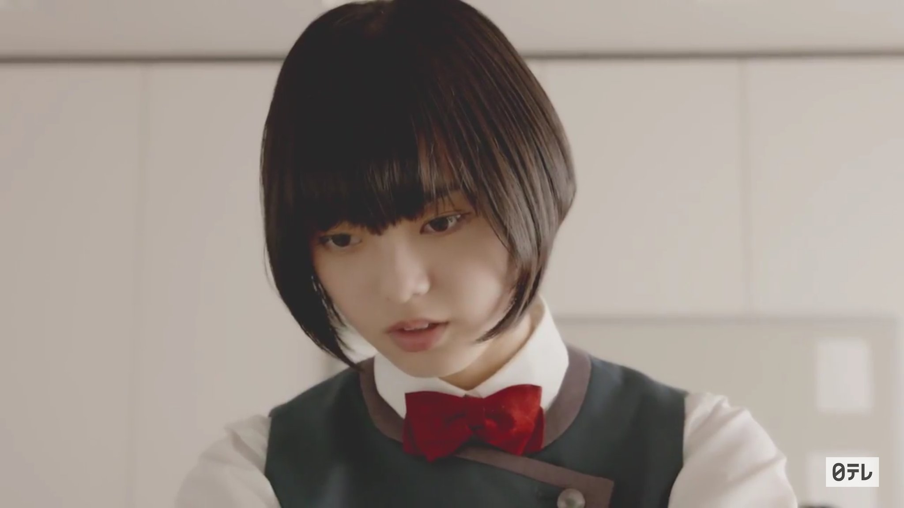
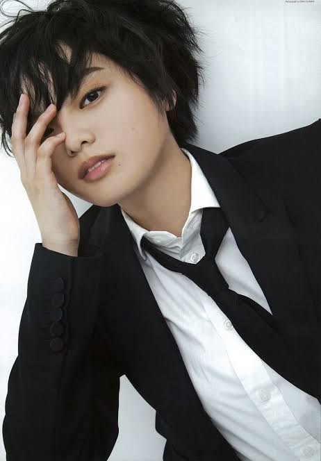

Profil
Hirate Yurina adalah aktris, soloist, model dan mantan anggota grup idola Keyakizaka46. Gadis yang akrab disapa sebagai Techi ini lahir pada tanggal 25 Juni 2001 di prefektur Aichi, Jepang. Ia membintangi banyak iklan, majalah, MV dan film. Debutnya dimulai pada tahun 2016 sebagai anggota grup idola Keyakizaka46 dalam MV "Silent Majority".
Menempati posisi center dalam grup berturut-turut hingga ia memundurkan diri. Ia memiliki kharisma dan ekspresi yang luar biasa ketika mengekspresikan lagu-lagu dari Keyakizaka46, sehingga tidak jarang fans dan pegiat showbiz memuji kemampuannya. Walau demikian, banyak hal yang telah Techi lewati selama ia menjadi anggota Keyakizaka46. Baik itu buruk atau baik. Salah satunya adalah cedera yang membuat grup Kanji Keyakizaka46 tidak dapat tampil di Budokan, yang mana adalah impian para musisi, dan digantikan oleh Hiragana Keyakizaka46. Serta serangan dari fans yang dialaminya pada insiden Akushukai (jabat tangan/handshake).
Reaksi terhadap Techi sendiri tidak selalu positif. Karena sangat tertutup, banyak hal mengenai dirinya yang berefek terhadap Keyakizaka46 tidak dapat dijelaskan. Ia juga bukan tipe idola yang "orthodoks", sehingga sebagian proporsi fans Keyakizaka46 yang adalah idol fans mungkin cenderung tidak menyukai sikapnya. Idola di Jepang umumnya bertingkah manis dan mengutamakan fanservice untuk memikat fans dan calon fans, namun Techi cenderung berkebalikan. Dan di tahun-tahun terakhirnya ia jarang melakukan aktivitas bersama Keyakizaka46.
Kendati demikian, nama Techi telah dibesarkan oleh Keyakizaka46. Ia menduduki posisi yang cukup tinggi pada survey seperti Nikkei Entertaiment Talent Survey. Setelah mengundurkan diri dari Keyakizaka46, ia membintangi 2 film yaitu Sankaku Mado no Sotogawa wa Yoru (2021) sebagai Hiura Erika, dan The Fable: Korosanai Koroshiya (2021) sebagai Hinako Saba. Ia juga merilis single digital pertamanya "ダンスの理由" pada tanggal 25 Januari 2020.
Di bawah ini adalah perjalanan karir Hirate Yurina dari debut hingga sekarang, fakta, serta galeri foto.
Karir
Perjalanan karir Hirate Yurina di mulai dari debutnya bersama Keyakizaka46 dengan MV Silent Majority. Sejak saat aktivitasnya tidak hanya sebagai anggota grup idola,,taoi juga aktris. Dan ketika ia mengundurkan diri dari Keyakizaka46, ia menjadi soloist dengan lagu "Dansu no Riyuu".
Sebagai Anggota Keyakizaka
Pada single pertama Keyakizaka46 "Silent Majority", Techi terpilih untuk menjadi center. Ia juga mendapatkan lagu solo "Yamanotesen". "Silent Majority" menjadi sangat terkenal karena liriknya yang berbicara tentang kebebasan dan memiliki tujuan dan pendirian. Mengingat bagaimana masyarakat dan budaya Jepang yang sangat menekankan harmoni dalam grup, Silent Majority justru membawa pesan yang berbeda dan nilai-nilai individualisme yang kuat. Dari single pertama ini Keyakizaka46 semakin dikenal, dan CDnya terjual sebanyak ratusan ribu copy serta menduduki peringkat atas di chart seperti Oricon dan Billboard Japan. Hingga saat ini pun, lagu ini masih sangat dikenal oleh publik Jepang dan menjadi salah satu lagu grup idola yang digemari. Dan dari era ini pula, imej grup Keyakizaka46 perlahan-lahan terbentuk.
Di single kedua, Sekai ni Ai Shika Nai, Techi kembali menjadi center. Lagu ini membawakan konsep yang berbeda dari sebelumnya, dan masih sangat berfokus kepada Techi. Di masa ini, Techi masih terlihat seperti idola Jepang pada umumnya yang bertingkah manis. Ia juga sering mengupdate blog atau mengirimkan mobame (mobile message). Selain itu, under group Hiragana Keyakizaka46 debut pada single ini bersama dengan Nagahama Neru.
Pada single ketiga, Keyakizaka46 kembali dengan lagu Futari Saison, kali ini mereka membawakan lagu yang memiliki kesan nostalgia. Pembagian screentime antar member pun semakin adil dan sejauh ini, Techi masih terlihat seperti biasanya. Perkembangan penjualan Keyakizaka46 juga pesat. Namun, ada kejadian dimana fans kabarnya berusaha memasuki asrama anggota yang mengakibatkan mereka harus pindah tempat.
Di single keempat Fukyouwaon, Techi mengalami kejadian dimana ia hendak dibunuh oleh fansnya. Pada saat itu diacara akushukai/handshake, seorang fans datang dan menyalakan flare di booth Techi dan Memi. Sejak kejadian ini, Techi tidak pernah lagi mengikuti acara handshake hingga ia mengundurkan diri. Disamping itu, Fukyouwaon juga menjadi salah satu lagu Keyakizaka46 yang paling dikenal. Dengan dance yang energik dan lirik lagu yang 'rebel', perlahan-lahan imej Keyakizaka46 terbentuk, dan mereka dikenal sebagai grup idola yang cool, serius dan tidak tersenyum.
Techi juga mengalami perubahan imej secara perlahan, menjadi pribadi yang terkenal misterius dan sangat tertutup.
Hingga saat ia mengundurkan diri, Techi adalah satu-satunya member dalam grup Sakamichi yang memiliki 9 solo cover (8 single dan 1 album). Ia juga menjadi center untuk lagu A side dan B side.
Sebagai Aktris
- Tokuyama Daigoro wo Dare ga Koroshitaka?
Techi pertama kali berakting pada drama grup Keyakizaka46 berjudul Tokuyama Daigoro wo Dare ga Koroshitaka? yang ditayang dari Juli 2016 hingga Oktober 2016. Bercerita tentang murid yang menemukan tubuh guru mereka di depan kelas dan menyembunyikannya.
- Zankokuna Kankyakutachi

Kemudian, pada tahun 2018 Techi kembali membintangi drama grup Keyakizaka46 berjudul Zankokuna Kankyakutachi sebagai Yuzuki Hayama. Dalam drama kali ini bercerita tentang bagaimana para murid terperangkap di sekolah dan cara untuk keluar adalah dengan menerima vote dari penonton.
- Hibiki
Hibiki adalah kali pertama Techi berakting dalam sebuah film dan menjadi peran utama. Ia beperan sebagai Akui Hibiki, gadis yang sangat bertalenta dalam menulis. Film Hibiki sendiri diadaptasi dari komik Hibiki: Shousetsuka ni Naru Houhou" karya Mitsuharu Yanamoto. Plot dari film ini adalah manuscript yang dikirimkan oleh Hibiki dibaca oleh editor Fumi Hanai (Kitagawa Keiko) dan ternyata sangat memuaskan. Kedekatan Techi dan Kitagawa Keiko juga terjalin melalui film ini. Kitagawa Keiko juga menjadi cameo dalam film Techi selanjutnya yaitu Sankaku Mado no Sotogawa wa Yoru.
- Sankaku Mado no Sotogawa wa Yoru
Ini adalah film pertama Techi setelah mengundurkan diri dari Keyakizaka46. Dalam film ini, Techi berperan sebagai Hiura Erika, gadis misterius yang dapat melakukan kutukan/sihir. Film ini adalah adaptasi dari manga Sankaku Mado no Sotogawa wa Yoru oleh Tomoko Yamashita dengan Zutomayo sebagai pengisi soundtrack. Techi dan 2 aktor utama lainnya (Masaki Okada & Jun Shison) kerap dipanggil dengan sebutan "Sankaku Sibling". Meskipu mengalami pengunduran akibat pandemi, akhirnya film ini dirilis pada bulan Januari 2021.
- The Fable: Korosanai Koroshiya
Film terbaru dari Techi yang akan tayang pada tahun ini adalah The Fable. Diadaptasi dari manga "The Fable" karya Katsuhisa Minami, Techi berperan sebagai Hinako Saba. Melalui trailer yang telah dirilis, fans kembali melihat Techi dengan rambut panjang (sebelumnya dalam film Hibiki). Salah satu kecendrungan Techi dalam memerankan peran adalah karakter yang terkenal dalam/misterius, termasuk dalam film.
Sebagai Soloist
Seperti yang sudah dituliskan sebelumnya, Techi memulai karir sebagai soloist pada tahun 2020 dengan merilis single "Dansu no Riyuu". Namun sebelum perilisan single, Techi tampil dalam acara CDTV dengan dan membawakan Dansu no Riyuu untuk pertama kalinya. Setelah perilisannya, Dansu no Riyuu menempati posisi pertama dalam Oricon Digital Daily Ranking dan urutan 6 dalam Weekly Ranking. Selain Oricon, Dansu no Riyuu juga menempati posisi pertama di iTunes Music Jepang. Hingga saat ini, MVnya telah ditonton sebanyak 4,5 juta kali, dan Techi sendiri sudah membawakan single pertamanya 3 kali di program musik terkenal di Jepang. Salah satunya Music Station.
Techi turut berpartisipasi dalam pembuatan lagu Dansu no Riyuu sebagai composer, selain itu ia juga membuat koreografi dibagian interlude (RoJ 2021) Melihat dari kecendrungan anggota grup idola yang lulus/keluar dari grup mereka, jarang sekali yang menjadi soloist/performer. Biasanya mereka menjadikan masa idol sebagai batu loncatan ke karir selanjutnya yang tidak berhubungan dengan musik, seperti aktris. Techi sendiri sempat mengatakan disalah satu interviewnya bahwa ia tidak yakin apa akan menyanyi atau menari lagi, sehingga kemunculannya sebagai soloist adalah hal yang benar-benar mengejutkan fans. Kini, ia mengatakan bahwa akan terus mengekspresikan berbagai hal, termasuk lewat lagu dan tarian. Bagi saya pribadi, yang paling menarik dari Techi adalah ia sebagai artist/performer. Sehingga kedepannya, saya harap ia bisa terus melahirkan karya sebagai soloist.
Fakta
Techi adalah orang yang tertutup, sehingga sangat jarang ia membagi cerita tentang dirinya.Meskipun demikian, ada beberapa fakta menarik tentang Techi dari orang-orang disekitarnya. Seperti panggilan ksgk (kusogaki/bocah bandel) karena ia suka menjahili orang dewasa (manager, dsb). Techi juga sering dipanggil babu (bayi) oleh anggota Keyakizaka46 karena ia adalah anggota termuda dari Keyakizaka46 generasi pertama. Selain itu ia memiliki kakak laki-laki dan anjing yang ia namai Cherry.
Dibeberapa interview, Techi mengatakan bahwa ia ingin berfokus kepada apa yang ada sekarang dibandingkan memikirkan masa depan. Ia juga tidak menyukai orang dewasa yang melakukan sesuatu tanpa usaha, dan membenci kebohongan serta orang-orang yang berbohong (Quick Japan Vol.135)
Selain itu, ia juga sangat menyukai Mickel Jackson, dan tidak bisa benar-benar bahagia dengan ulangtahunnya dikarenakan jatuh pada tanggal yang sama dengan ulang tahun Michael Jackson. Techi mengatakan bahwa warna yang mendeskripsikannya adalah hitam dan ia memiliki banyak pakaian berwarna hitam (Vivi September 2020)